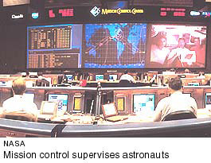

1. Science and technology get human beings to the moon (July 20, 1969)
Dramatic scientific and technological
exploits occurred in the 1900's. These developments inspired bold responses
in the arts. Space exploration, culminating in the first moon landing
by the American astronauts Neil A. Armstrong and Edwin E. Aldrin, Jr.,
is one of the great achievements of humankind. The quantum theory proposed
by the German physicist Max Planck (1900) and the special theory of
relativity proposed by the German-born scientist Albert Einstein (1905)
may have suggested the simultaneous vision of Cubism.

German rocket science of
the 1930's and 1940's, Sputnik I in 1957, or the orbiting of satellites
(1958 on) led artists to react with technology-inspired Futurism, Suprematicism,
even Rube Goldberg's mad machines and Alexander Calder's mobiles. Jean
Tinguely satirized the power of technology with his self-destructing
machines (Homage to New York, 1960), as did Andy Warhol and Claes
Oldenburg ( with satirical designs for monuments such as a skyscraper-high
windshield wiper for Chicago).
Achievements in space depended
on the technology of computers (developed in 1946), transistors (1947),
and microchips (1971). Artists used this same technology in video art
(1982) and computer graphics and computer art (1988), and for "appropriation"
and performance art (1990's).
More information:
|